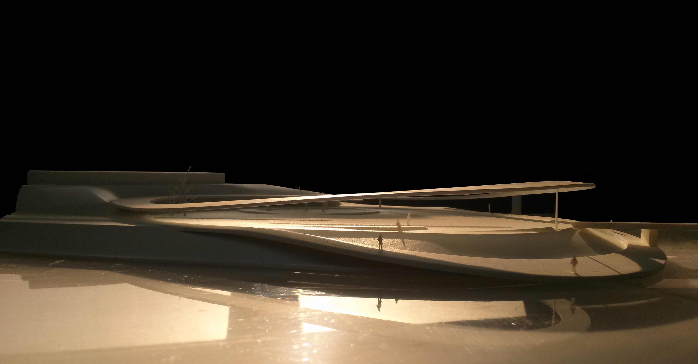
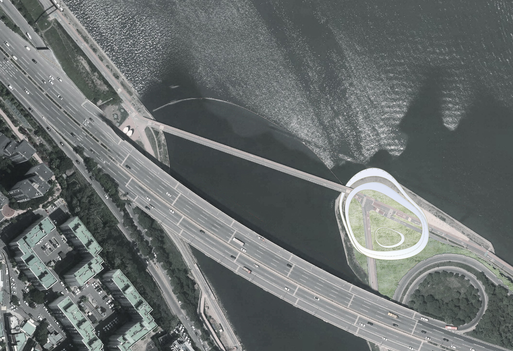

Two simple rings integrate the activities which are sparsed and dispersed without proper facilities. On the plan view, it seems just two rings, but actually it has the differences from its height. The differences are origined the context and programs.

"It's fragmented by the speed of the bicycle. Different activities (wants) separated by the level difference with the Han River. Another possibility to capture and collect more actively. It will create a possibility as a more integrated "public place."
